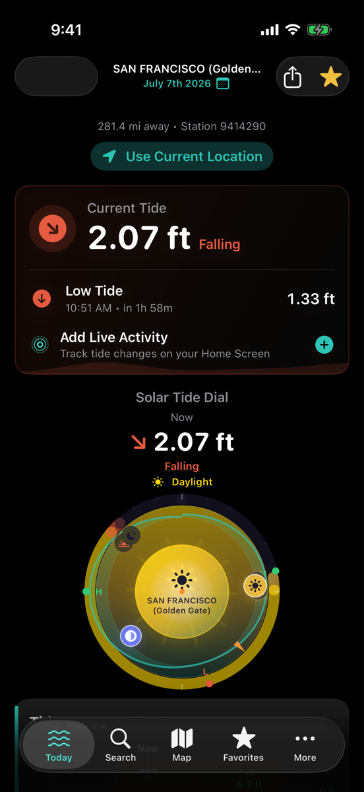
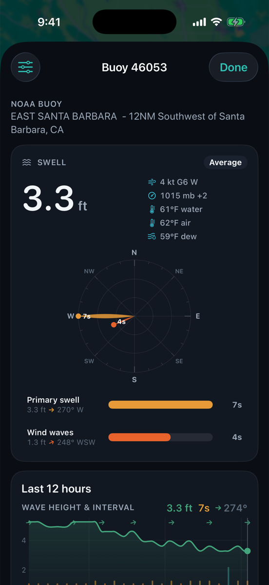
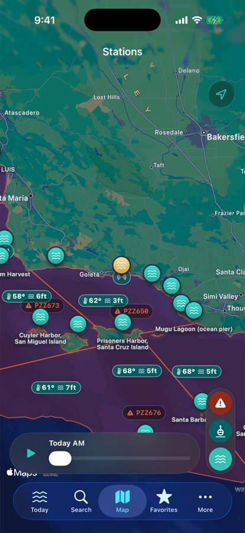
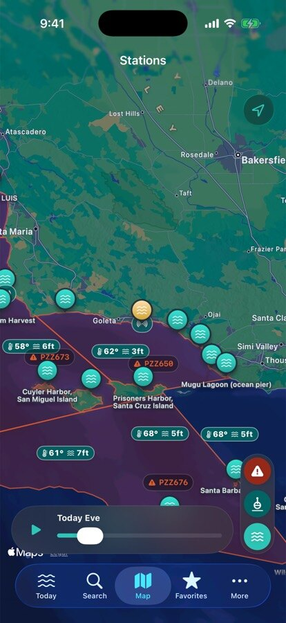
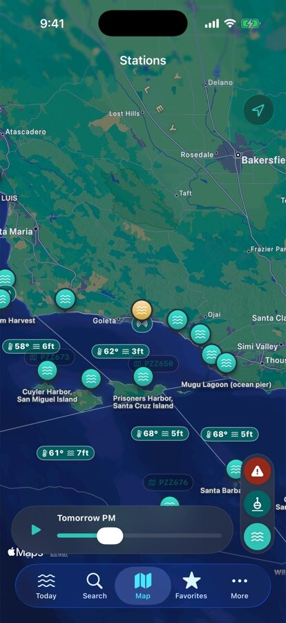
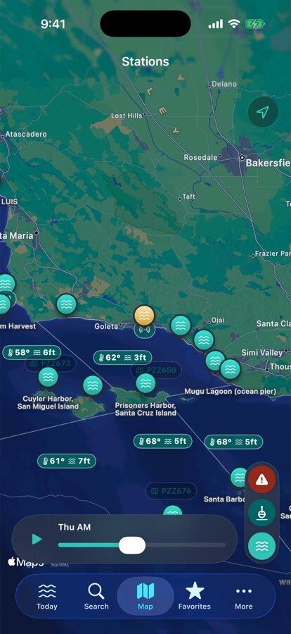
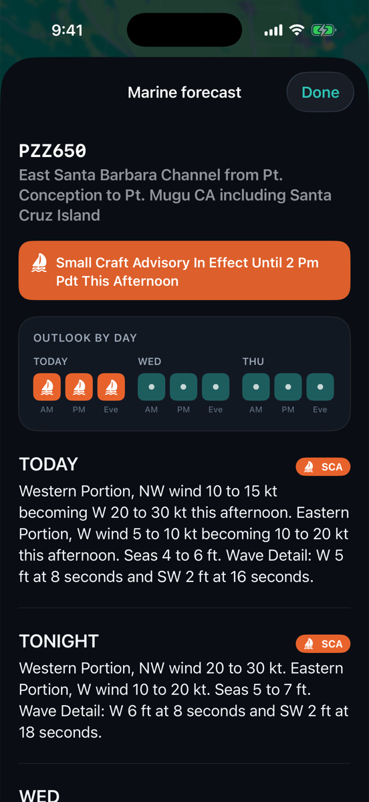

The tide turns whether you're ready or not.
Be ready. Free download — Pro when you're hooked.
The water doesn't send a calendar invite. RipCat Pro puts the tide on your wrist, your Lock Screen, and your nav desk — so the decision is made before your coffee is.
For surfers
You already know the feeling: forty minutes of driving, and the tide drained the sandbar an hour before you got there. The swell was real. The window wasn't.
RipCat draws the whole morning on one dial — the low, the push, first light to last — so you know whether your spot needs the drain or the fill, and exactly when it gets it. Not a surf score. Your tide, your read.
We won't score your waves or rat out your spot. You know your break better than any algorithm — RipCat just tells you what the tide's doing when you get there.

The Solar Tide Dial — daylight, the low, the push, one ring. Real capture.
For anglers
Slack tide is dead water, and every angler on the beach knows it. The question was never if the water will move — it's whether you'll be standing there when it does.
RipCat marks the swing on a curve you can scrub with a thumb, backs it with water temperature from the buoy you actually fish near — with a 7-day trend, so you know if the bite's been building before you burn the gas — and wraps it all in a dark UI that won't torch your night vision at 4 a.m.
No app catches fish. But moving water beats slack water, and you deserve to know which one you're driving to.

Buoy 46053, East Santa Barbara — water temp, swell, wind. Real capture.
For boaters & sailors
You know the drill: one government site for tides, another for the marine forecast, a third for the buoy — all in tables built in 1997, on a phone with one bar at the harbor mouth.
RipCat puts the same official data on one screen: NOAA tide predictions you can scrub to the minute you actually transit, NWS Small Craft Advisories painted on the map with a day-by-day timeline, and live buoy wind, waves, and pressure from outside the harbor.
RipCat is planning data, not navigation gear. Predictions are not navigation advice — carry your charts, mind your keel, and make the seamanship calls yourself.





The week sweeping the chart, and the full forecast — outlook by day, then every period. Real captures.
Free vs Pro
Every tide, buoy, and advisory in RipCat costs nothing. Pro is for people who check the water every single day — it moves the answer to wherever your eyes already are.
| What you get | Free | Pro |
|---|---|---|
| NOAA tide predictions, charts & Tide Dial | ✓ | ✓ |
| Station search, map & nearest station | ✓ | ✓ |
| Live buoys, water temp & marine advisories | ✓ | ✓ |
| Sun, moon & solunar times | ✓ | ✓ |
| Favorite stations | 1 | Unlimited |
| Apple Watch complications | — | ✓ |
| Lock Screen widgets | — | ✓ |
| Share & export charts | — | ✓ |
| Printable tide calendars | — | ✓ |
| iCloud sync across devices | — | ✓ |
Pricing
One price, every platform: iPhone, iPad, Apple Watch, and Mac.
For reference, as of July 2026: Surfline Premium runs $119.99/year. RipCat Pro is $19.99 — with no ads, no account, and no algorithm deciding what your home break is worth.
Subscriptions are billed and managed through your Apple account — cancel in Settings anytime, no hoops. Coverage is United States tide stations, buoys, and marine zones (NOAA · NWS · NDBC). Predictions are predictions, not guarantees, and never navigation advice.
Be ready. Free download — Pro when you're hooked.